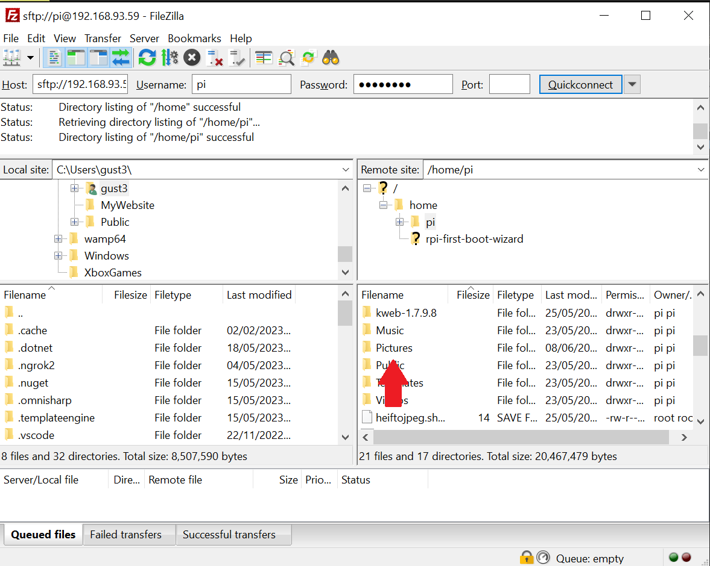

Tryk her hvis du allerede har programmet installeret
Trin 1:
Gå til Filezillas hjemmeside her(Filezilla-project.org)
Trin 2:
Tryk på "Download Filezilla Client"
Trin 3:
Tryk på "Show additional download options"
Trin 4:
Download setup filen, som passer til din computer (Formentlig Windows 64bit versionen)
Trin 5:
Kør setup filen
Trin 6:
Du får formentligt en prompt, om at Filezilla må lave ændringer, på din computer, tryk på "Ja"
Trin 7:
Tryk på "I Agree"
Trin 8:
Tryk på "Next"
Trin 9:
Tryk på "Next"
Trin 10:
Tryk på "Next"
Trin 11:
Tryk på "Install"
Trin 12:
Tryk på "Finish"
Trin 13:
Du er nu i Filezilla programmet, I den venstre markerede boks, kan du se din computer, i den højre kan du se den forbunede computer
Trin 14:
For at forbinde til billed frammen, skal du indtaste disse informationer:
Host: raspberrypi.local eller 192.168.93.60
Username: pi
Password: Password udleveres af Henrik
Port: 22
Tryk på "Quickconnect" Efter nogen sekunder, burde du være forbundet
Trin 15:
Slå "Always trust this host, add this key to cache" til, og tryk "OK"
Trin 16:
Du burde nu kunne set billed frammen, i den højre boks, scroll ned, indtil du finder "Pictures" mappen, og dobbeltklik på den

Trin 17:
For at uploade billeder, skal du bare finde den mappe på on computer billederne er i, markere de billeder du vil flytte, og træk dem over i billed frames "Pictures" mappe, efter noget tid burde du få en notifikation om, at billederne er blevet uploadet
For at forbinde til billed frammen, skal du indtaste disse informationer:
Host: raspberrypi.local eller 192.168.93.60
Username: pi
Password: Password udleveres af Henrik
Port: 22
Tryk på "Quickconnect" Efter nogen sekunder, burde du være forbundet
Trin 3:
Du burde nu kunne set billed frammen, i den højre boks, scroll ned, indtil du finder "Pictures" mappen, og dobbeltklik på den
Trin 4:
For at uploade billeder, skal du bare finde den mappe på on computer billederne er i, markere de billeder du vil flytte, og træk dem over i billed frames "Pictures" mappe, efter noget tid burde du få en notifikation om, at billederne er blevet uploadet